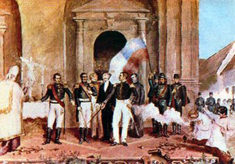
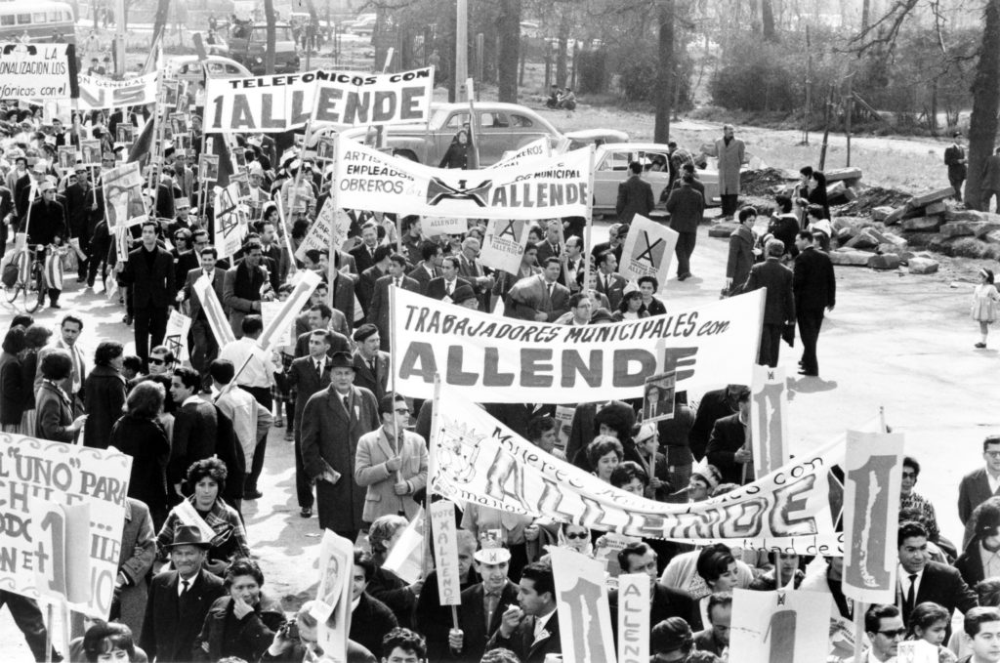

Independencia de Chile
La independencia de Chile comenzó con la Primera Junta Nacional de Gobierno en 1810 y culminó con la Batalla de Maipú en 1818, liderada por Bernardo O'Higgins y José de San Martín.

El período colonial en Chile abarca desde la llegada de los españoles en 1540 hasta la independencia en 1818. Durante este tiempo, se fundaron ciudades como Santiago y se estableció un sistema de encomiendas.
La independencia de Chile comenzó con la Primera Junta Nacional de Gobierno en 1810 y culminó con la Batalla de Maipú en 1818, liderada por Bernardo O'Higgins y José de San Martín.
El siglo XX marcó un período de modernización y cambios sociales en Chile, con eventos clave como la presidencia de Salvador Allende y el régimen militar de Augusto Pinochet.
